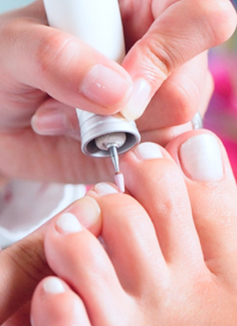

Оставьте заявку и получите бесплатную консультацию и скидку в 10% на первый приём
Жарикова Ольга
Специалист по аппаратному педикюру и проблемным стопам
Образование
Пройдено более 10 проф.курсов
Опыт
10 лет опыта работы
Образование данного вида мозоли не имеет связи с полом и встречается одинаково часто как у мужчин, так и у женщин. День за днем на коже формируется уплотнение, утолщение верхнего слоя, развивается гиперкератоз, который в народе нередко называют натоптышем. В принципе, с натоптышами можно жить годами, не обращая на них особого внимания. В редких случаях вокруг мозоли может начать формироваться воспаление, самым тяжелым последствием которого является некроз. Если на ногах имеется сухой мозоль, лучше обратиться к подологу. Ни в коем случае нельзя грубо нарушать целостность кожного покрова, срезать нарост лезвием и т. п. Более того, эти меры могут оказаться неэффективными по отношению к стержневой мозоли. Все дело в том, что под толщей кератоза образуется хрящеподобный конус. Его верхушка упирается в глубокие слои дермы. Такая сердцевина передавливает сосуды, ухудшает питание кожи, в результате чего конус еще больше разрастается. Даже если человек удалит верхний ороговевший слой, сердцевина все равно останется. Если вовремя не избавится от них, то корень стержневой мозоли может углубиться до надкосницы. скрыть
Прежде всего они опасны, тем, что являются «входными воротами» для проникновения болезнетворных микроорганизмов. Если Вы занимаетесь самолечением, будьте осторожны, так как повышается риск инфицирования и воспаления, поскольку в местах растрескивания образуется открытая рана. У специалиста, снятие огрубевшей кожи выполняется очень аккуратно, чтобы в процессе не задеть здоровые слои дермы. Чтобы процесс заживления прошел быстрее, необходимо истончить края трещины. Если процедура проведена правильно, то жесткий роговой слой удаляется без повреждения мягких тканей. скрыть
Часто клиенты не могут понять бородавка у них появилась или мозоль. Только грамотный специалист может это определить и направить к дерматологу или дерматологу - онкологу . ВПЧ подвержены и мужчины, и женщины.У мужчин бородавки появляются только в случае резкого снижения иммунитета, что с сильным полом случается не так часто. Бородавки – распространенное явление у детей и подростков, поскольку их иммунитет не сформирован до конца, вследствие чего они легко заражаются папилломавирусами. Немаловажную роль играет тот факт, что дети, посещающие детские сады и школы, как правило, пребывают в повышенных стрессовых условиях, что негативно сказывается на защитных способностях организма. Помимо контактно-бытового способа инфицирования. возможно также внутриутробное заражение от матери. Лучшей профилактикой возникновения бородавок является банальное соблюдение правил личной гигиены: своевременное мытье рук, использование личных маникюрных принадлежностей, полотенец, мочалок, обуви. Не следует ходить босиком в бассейне, общих душевых, банях и саунах. Также при остановке в гостиницах стоит захватить с собой антисептические средства для обработки санузлов. Параллельно необходимо укреплять иммунитет и заботиться об общем состоянии здоровья. скрыть
Основная задача— обеспечить целостность кожи, предотвратить трещины, надрывы кожи на стопе, куда может попасть инфекция и вызвать воспаление. Для этого нужно правильно ухаживать за кожей, в том числе за огрубевшей кожей, за ногтями, максимально разгрузить стопы. Любая рана на стопе у человека с сахарным диабетом – это, в перспективе, язва. скрыть
Основная причина развития онихокриптоза — именно неумение обращаться с маникюрными ножницами и неаккуратность при обрезании ногтей. Можно случайно срезать уголок, оставить острый край, потереть краем ножниц кожу вокруг, подстричь ноготь слишком коротко. Все это опасно и в большинстве случаев провоцирует врастание. Ногтевая пластина не растёт в ширину, и врастание ногтя возникает исключительно из-за воспаления околоногтевого валика. В процессе развития болезни мягкие ткани околоногтевого валика травмируются об острый край ногтевой пластины. Начинается воспалительный процесс с отёком мягких тканей, из-за которого они ещё больше вдавливаются в ноготь. В результате постоянной травматизации начинает разрастаться грануляционная ткань (довольно мягкая и пористая). Постепенно отёк и воспаление нарастают, всё больше причиняя дискомфорт. Присоединяется грибковая и бактериальная среда, возникает изменение цвета пораженного околоногтевого валика, локальное повышение температуры и выделение гноя. Носить привычную обувь становится практически невозможно, попытки опереться на больной палец вызывают острую боль. Далее воспалительный процесс приобретает хроническое течение, грануляционная ткань уплотняется, ногтевая пластинка деформируется, и воспаление может распространиться на костную ткань Онихолизис характеризуется отделением ногтевой пластинки от ногтевого ложа со свободного края в дистальном или боковых отделах. Визуально происходит смена окраски ногтя с телесной на белесовато-серую, что обусловлено попаданием воздуха в подногтевой промежуток, что является «входными воротами» для попадания микробов, окраска ногтя меняется. Бактерии заставляют ноготь желтеть, грибы придают коричневатый оттенок, синегнойная инфекция – зеленоватый. При микробном поражении изменяется и консистенция ногтевой пластинки, она становится шероховатой, начинает деформироваться. В пространстве между ногтем и ногтевым ложем скапливаются грязь и кератин, образуется подногтевой гиперкератоз с неприятным запахом. Возможно формирование очагов вторичной инфекции. Убрать онихолизис и почистить ногтевое ложе, лучше у мастера аппаратного педикюра или подололга. скрыть
Споры грибков способны попасть на нашу кожу и в подкожную клетчатку разными способами – через слизистую оболочку глаз или рта, верхних дыхательных путей, через различные микротравмы, раны, трещины, опрелости, язвочки. По данным российских дерматологов, микозами стоп болеют 10-20 % взрослого населения, у мужчин болезнь встречается в 2 раза чаще, чем у женщин, у пожилых людей чаще, чем у молодых. В возрасте старше 70 лет микоз стоп регистрируется у каждого второго пациента, что связано с увеличением сопутствующих метаболических и сосудистых изменений. Всё чаще микозы стоп выявляют у детей.Если Вы заметили, что Ваши ногтевые пластины видоизменились, пожелтели, стали рыхлыми , сухими, обращайтесь к нам за помощью. При микозе необходимо почистить ногтевые пластины, удалить всю их нестабильную часть, чтобы лекарственный препарат проникал глубже.Причины появления микозаСпоры грибков способны попасть на нашу кожу и в подкожную клетчатку разными способами – через слизистую оболочку глаз или рта, верхних дыхательных путей, через различные микротравмы, раны, трещины, опрелости, язвочки.По экспертным оценкам 15–30% всего населения земного шара страдают от грибковых заболеваний.Одним из факторов, провоцирующих развитие микоза, является иммунодефицит – снижение защитных сил организма. Микозы способны поражать различные участки кожи (стоп, ног, кистей, рук, головы, туловища) и ее придатки (волосы, ногти), наружные половые органы, слизистые оболочки, легкие, пищевод. Длительность инкубационного периода зависит от вида возбудителя. скрыть

Отзывы
1000+ довольных клиентов